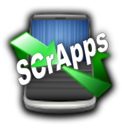

<h1 style="text-align: center;">Welcome to codeWriter!</h1> I made this app for testing scraps of HTML, JavaScript, or CSS code when I'm out and about and don't have a PC handy.<br><br> It's built using CodeMirror, which is an excellent Open Source HTML based code editing programming API. CodeMirror can be found at<a href="http://codemirror.net/"> http://codemirror.net/</a>.<br><br> <table style="text-align: center;" width="100%"><tr> <td width="50%"><center><img width="100%" src="images/baboon.png"/><br>(CodeMirror Logo)</center></td> <td width="50%"><center><br>(SCrApps Logo)</center></td> </center></tr></table><br> If you find this app useful, you should consider sending a donation to Marijn Haverbeke (the creater of CodeMirror) or buying some <a href="https://appworld.blackberry.com/webstore/vendor/4735/">SCrApps apps from App World.</a><br><br> Any code you use here will automatically be saved into localStorage, so when you open the app you'll be right back where you started. If you don't have any data saved in the html field above, this screen will be displayed.<br><br> Version 1.0 doesn't contain much more than a text field and a WYSIWYG display; in future releases I hope to add export to file, theming options, and other useful updates.<br><br> If you have any questions, just shoot me an email at Support@SCrApps.org.